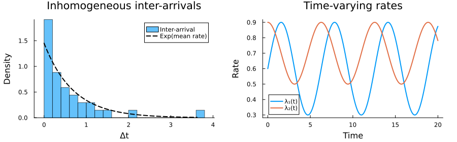

Poisson Processes via Kinetic Monte Carlo
A Poisson process is the simplest continuous-time stochastic process: events occur independently at a given rate. This example builds homogeneous and inhomogeneous Poisson processes directly from the MonteCarloX.jl kinetic Monte Carlo primitives, showing both the high-level step! interface and the low-level next_time / next_event building blocks.
using Random, StatsBase, BenchmarkTools, Plots
using MonteCarloXHomogeneous Poisson process
A constant rate $\lambda$ gives exponentially distributed inter-arrival times with mean $1/\lambda$. We model this as a single-channel KMC process and validate the inter-arrival statistics.
λ = 1.2
T = 10.0
alg = Gillespie(MersenneTwister(7))
arrivals = Float64[]
while alg.time < T
t_new, event = step!(alg, [λ])
push!(arrivals, t_new)
end
inter_arrival = diff([0.0; arrivals])
println("Events : ", alg.steps)
println("Mean inter-arrival — simulation : ", round(mean(inter_arrival); digits=3))
println("Mean inter-arrival — exact : ", round(1/λ; digits=3))Events : 13
Mean inter-arrival — simulation : 0.825
Mean inter-arrival — exact : 0.833Benchmark: step! vs raw randexp
The step! interface adds minimal overhead over a bare exponential draw. We compare both to quantify the cost of the KMC bookkeeping.
println("\nBenchmark: step! interface")
@btime begin
alg = Gillespie(MersenneTwister(7))
arr = Float64[]
while alg.time < $T
t_new, _ = step!(alg, [$λ])
push!(arr, t_new)
end
end
println("Benchmark: raw randexp")
@btime begin
rng = MersenneTwister(7)
t = 0.0
arr = Float64[]
while t < $T
t += randexp(rng) / $λ
push!(arr, t)
end
end
Benchmark: step! interface
11.922 μs (26 allocations: 20.09 KiB)
Benchmark: raw randexp
11.742 μs (26 allocations: 20.09 KiB)Inhomogeneous Poisson process via thinning
When the rate varies with time, exact sampling uses thinning (Lewis & Shedler 1979): propose candidate times from a dominating homogeneous process at rate $\lambda_\text{max}$, then accept each candidate with probability $\lambda(t) / \lambda_\text{max}$. MonteCarloX.jl implements this internally when step! receives a Function as its event source — the function is called as rates(t) at the proposed time to evaluate acceptance.
Here we have two channels with sinusoidal rates:
\[\lambda_1(t) = 0.6 + 0.3\sin(t), \qquad \lambda_2(t) = 0.7 + 0.2\cos(t)\]
rate_fn(t) = [0.6 + 0.3*sin(t), 0.7 + 0.2*cos(t)]
rate_max = [1.0, 1.0] ## dominating rates per channel
alg = Gillespie(MersenneTwister(21))
T = 20.0
counts = zeros(Int, 2)
event_times = Float64[]
while alg.time < T
t_new, event = step!(alg, rate_fn)
isnothing(event) && break
counts[event] += 1
push!(event_times, t_new)
end
println("Total events : ", alg.steps)
println("Channel counts : ", counts)
println("Final time : ", round(alg.time; digits=3))Total events : 34
Channel counts : [13, 21]
Final time : 20.017Visualisation
The event time series shows the two channels interleaved. # The marginal inter-arrival distribution should be approximately exponential with a rate equal to the time-averaged total rate.
# inter-arrival histogram vs exponential fit
mean_rate = mean(sum(rate_fn(t)) for t in event_times)
inter_inhom = diff([0.0; event_times])
p1 = histogram(inter_inhom; bins=30, normalize=:pdf, alpha=0.6,
label="Inter-arrival", xlabel="Δt", ylabel="Density",
title="Inhomogeneous inter-arrivals")
ts = range(0, maximum(inter_inhom); length=200)
plot!(p1, ts, mean_rate .* exp.(-mean_rate .* ts);
lw=2, color=:black, ls=:dash, label="Exp(mean rate)")
t_grid = range(0, T; length=300)
p2 = plot(t_grid, [r[1] for r in rate_fn.(t_grid)]; lw=2, label="λ₁(t)",
xlabel="Time", ylabel="Rate", title="Time-varying rates")
plot!(p2, t_grid, [r[2] for r in rate_fn.(t_grid)]; lw=2, label="λ₂(t)")
vline!(p2, event_times[findall(x -> x == 1, counts)]; alpha=0.15, color=:gray, label="")
plot(p1, p2; layout=(1,2), size=(900, 280), margin=5Plots.mm)
This page was generated using Literate.jl.